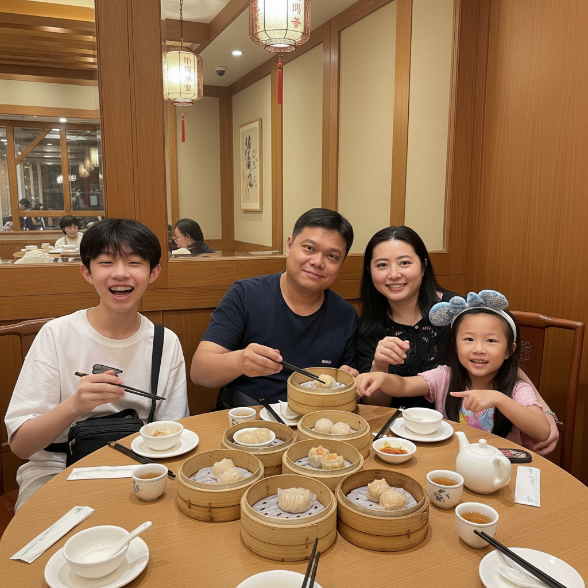
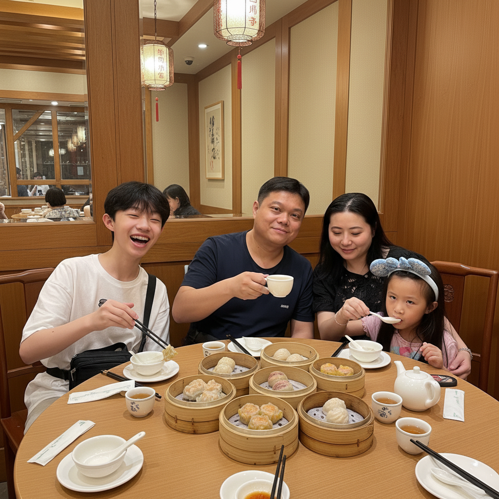
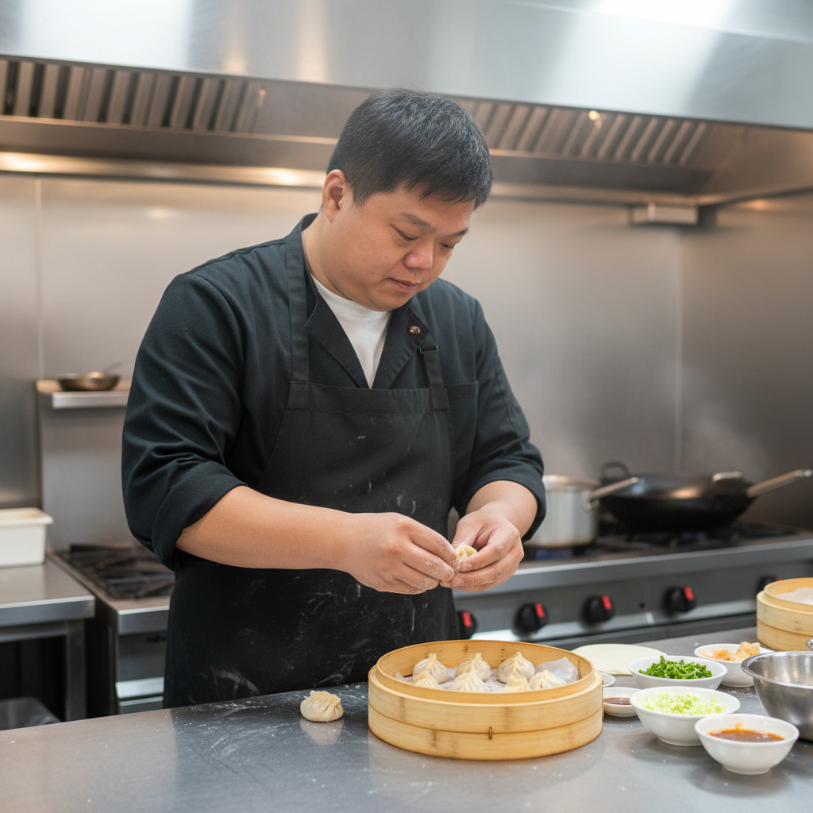
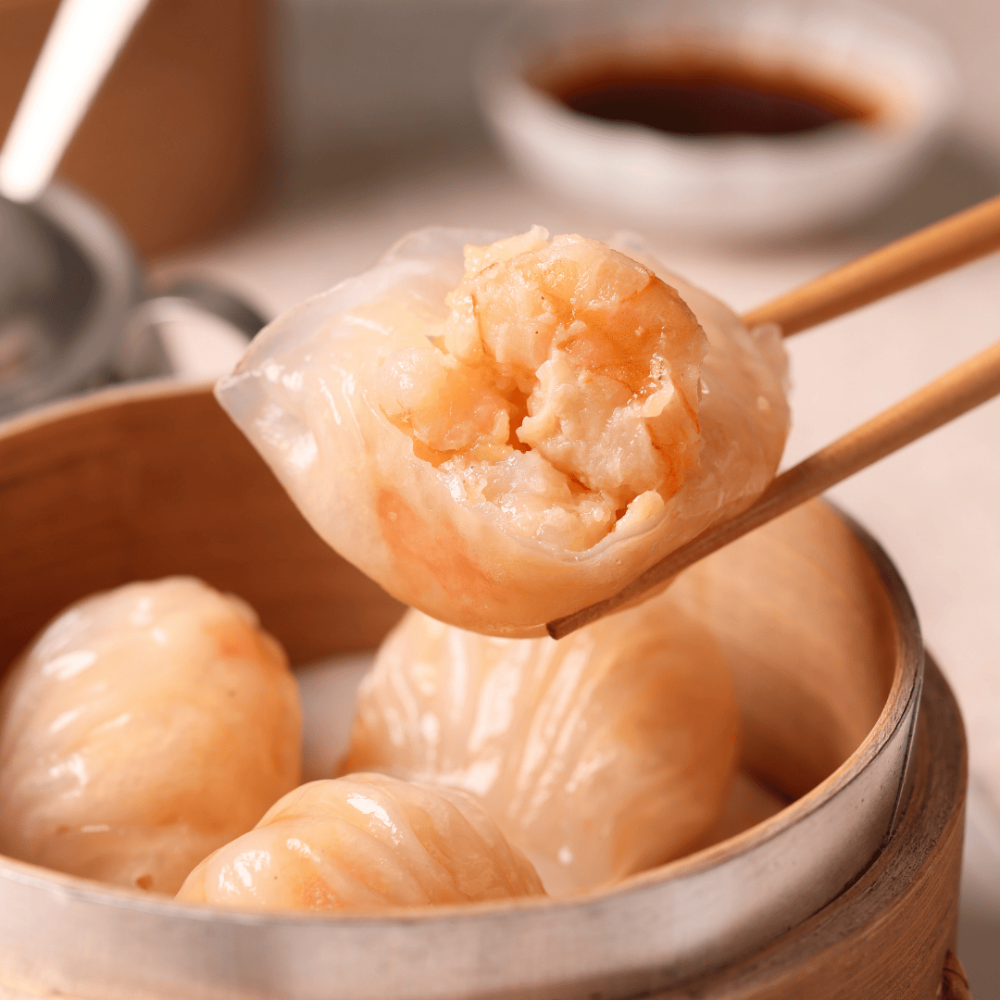
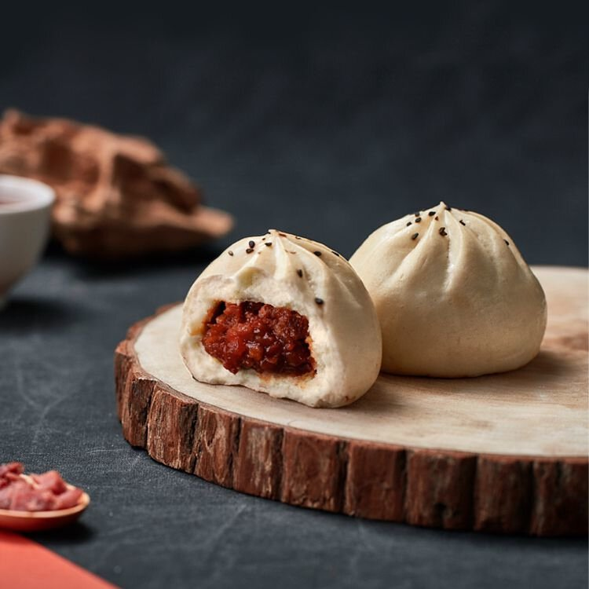
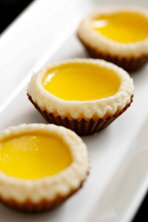

雅致環境 · 中式韻味

📍 雅致環境 · 細味時光
優閒雅致，舒適聚餐空間

🍂 溫馨舒適 · 與家常味
隨心設計，盡顯歡樂氛圍

🔥 明檔廚房 · 即席烹調
新鮮食材，呈現真摯美味
午市巧手點心

水晶蝦餃皇
原隻大蝦，薄皮透亮，鮮甜爽彈
午市精選 $48
蟹籽燒賣皇
豬肉與鮮蝦完美比例，蟹籽點綴
午市必點 $42
蜜汁叉燒包
軟綿麵皮，甜香叉燒內餡
傳統滋味 $38
酥皮蛋撻仔
層層酥脆，蛋香濃郁 飯後甜點
$28 / 兩件營業時間
午市 11:30 - 15:00 (最後點心點單14:30)
晚市 18:00 - 22:30 (最後小菜點單21:45)
週末及公眾假期照常營業
地址
英國
地下
(近出口)